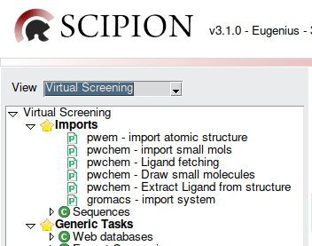

Automatic testing tool
Scipion chem also integrates a tool aimed at running every test in a plugin taking advantage of the full potential of the machine they are being run on.
Requisites
In order to use this tool, both scipion-chem and the plugin to be tested must be installed.
Usage
Basic usage
There are usually two ways of using the automatic test tool:
The first and easiest one usually is to call the script directly from the scipion-chem directory. To command to use is:
python /path/to/scipion-chem/pwchem/runTests.py /path/to/scipion/scipion3 modulenameWhere
/path/to/scipion-chem/is the path to your scipion-chem repository,/path/to/scipion/is the current path to your Scipion3 installation, effectively providing the script the scipion binary file to launch, andmodulenamemust be replaced with the module name of the plugin to use. That name can be found inside Scipion, when searching for protocols of a plugin.For example, the module name for scipion-chem is
pwchem, as shown in the image below (pwchem plugins are the ones that belong to scipion-chem as shown in the documentation):Example
If I want to run all tests for scipion-chem plugin, my scipion-chem repository has been downloaded in the path
/home/chemuser/software, and scipion is also in the path/home/chemuser/software, the command I would need to run would be:python /home/chemuser/software/scipion-chem/pwchem/runTests.py /home/chemuser/software/scipion/scipion3 pwchemIt is not always possible and / or easy to use the first method, specially if scipion-chem has been installed in production mode. So, for such reason, all plugins which deppend on scipion-chem, are bundled with a small script that imports and calls the script from scipion-chem. To use it, use the following commands:
conda activate scipion3 python /path/to/scipion-chem-plugin/modulename/runTests.py /path/to/scipion/scipion3 modulenameWhere
/path/to/scipion-chem-plugin/modulename/must be replaced with the path of the plugin to test, and, inside it, the folder with the module name of that plugin. The rest of arguments must also be replaced as explained in the previous way.Example
If I want to run all tests for scipion-chem-autodock plugin, my scipion-chem-autodock repository has been downloaded in the path
/home/chemuser/software, and scipion is also in the path/home/chemuser/software, the command I would need to run would be:conda activate scipion3 python /home/chemuser/software/scipion-chem-autodock/autodock/runTests.py /home/chemuser/software/scipion/scipion3 autodockNote
Take into account that, from every plugin, you can access the automatic test tool entirely, which means that you can also run tests for plugins other than the one you are calling it from.
For example:
conda activate scipion3 python /home/chemuser/software/scipion-chem-autodock/autodock/runTests.py /home/chemuser/software/scipion/scipion3 rosettaThis command would run all tests for
scipion-chem-rosettaplugin.
{kind=link}
Additional Flags
This tool also provides several optional flags for different reasons.
-hor--help: Optional. Prints the help message of the script, where all the flags and usage is explained, and exits without running tests.Example:
python /home/chemuser/software/scipion-chem/pwchem/runTests.py -h
-testData: Optional only deppending on the plugin. This param defines the path to aJSONfile containing data defined by the plugin’s developer, it’s default name beingtestData.json.This file is needed to define the datasets needed by the tests, and the exclusions for tests that cannot be run in some situations, to avoid unnecessary errors.
Example:
python /home/chemuser/software/scipion-chem/pwchem/runTests.py /home/chemuser/software/scipion/scipion3 pwchem -testData=/home/chemuser/software/scipion-chem/pwchem/testData.json
-jor--jobs: Optional. Defines the number of jobs to be run in parallel. If it is not set, the default value is the maximum available in the machine.Example:
python /home/chemuser/software/scipion-chem/pwchem/runTests.py /home/chemuser/software/scipion/scipion3 pwchem -j 8
-noGPU: Optional. Excludes from running all the tests that require GPU. Especially useful for enviroments where a GPU is not available.Example:
python /home/chemuser/software/scipion-chem/pwchem/runTests.py /home/chemuser/software/scipion/scipion3 pwchem -noGPU
For developers
In order to avoid unnecessary errors for some situations, while developing the plugin’s tests, a JSON will often be needed to define some
data regarding the tests. It is the JSON file referenced by the flag -testData, and it’s name should be, for standarization reasons, testData.json.
This JSON file should follow the format described below:
{
"datasets": ["model_building_tutorial", "smallMolecules"],
"skippable": {
"gpu": [
"tests_docking.TestScoreDocking",
"tests_docking.TestConsensusDocking"
],
"dependencies": [
{
"name": "scipion-chem-autodock",
"module": "autodock",
"tests": [
"tests_docking.TestScoreDocking",
"tests_docking.TestConsensusDocking"
]
}
],
"others": [
{
"test": "tests_docking.TestScoreDocking",
"reason": "It takes too long, I don't want to run it in batch."
}
]
},
"test-dependencies": {
"tests_docking.TestExtractLigand": ["tests_docking.TestScoreDocking", "tests_docking.TestConsensusDocking"]
}
}
Note
All tests should also follow the naming convention shown in the example. It is just a shorter version of the full test found
with scipion3 test --grep ... command.
For example, test pwchem.tests.tests_sequences.TestPairwiseAlign would be written tests_sequences.TestPairwiseAlign, since
the rest is not needed (pwchem is the module name which we already know since it’s an argument, and tests is redundant,
so the tool autocompletes this info for you).
The first and most important field to take into account is datasets. This field’s value is a list of the dataset names your tests need.
It is important to include them because, even if running a test already downloads its dataset, when several tests running in parallel try to
download the same datasets, it causes concurrency errors. By adding them to this field, tests will be downloaded before any test is run.
The second field, skippable, is the skippable test section. This section will contain all the tests that won’t be run, or will be skipped if
certain conditions are met, defined by the fields inside it.
gpu: It defines a list of tests that will be skipped if the-noGPUflag is used.dependencies: It defines a list of dependencies, each one with their own tests. It is devided in three sub-fields:name: Name of the plugin (or python package, but intended for plugins) this test deppends on.module: Module name of the plugin. If instead of a plugin, it is a python package, it will likely be the same name thannamefield.tests: List of tests that have this dependency.
Here, the test tool will try to import the module defined, and, if succeeds, the tests are run normally. If it fails, they are skipped.
others: This section defines a list of tests that will be skipped for different reasons than covered by the other sections. It has two sub-fields:test: The test that will be skipped.reason: Reason why that test is being skipped. This is used to print a message when skipping the test that will show the reason.
The third field, which is optional, is test-dependencies. This fields contains a list, which will define every test that deppends
on other test of the same plugin. This is sometimes necessary, because if one test deppends on another one and they are run in
parallel, it will cause errors, so it is meant to respect an execution order between them.
For example, let’s say we have four tests, called A, B, C, and D. In this case, for example, A does not deppend on other tests.
B deppends on A, C deppends on B, and D deppends on both A and C. For the given example, the test-dependencies field
would look like this:
"test-dependencies": {
"B": ["A"],
"C": ["B"],
"D": ["A", "C"]
}
This will ensure that A will be executed first (in parallel with all of the other regular tests), then B, then C, and finally D,
therefore, making sure there is no concurrency between interdependent tests.